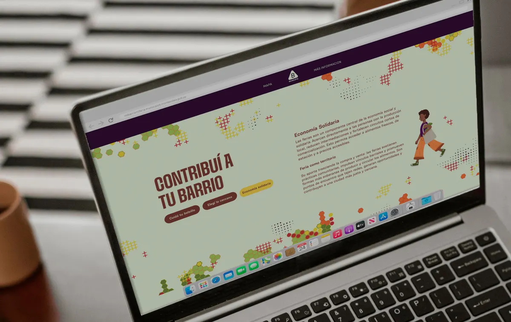
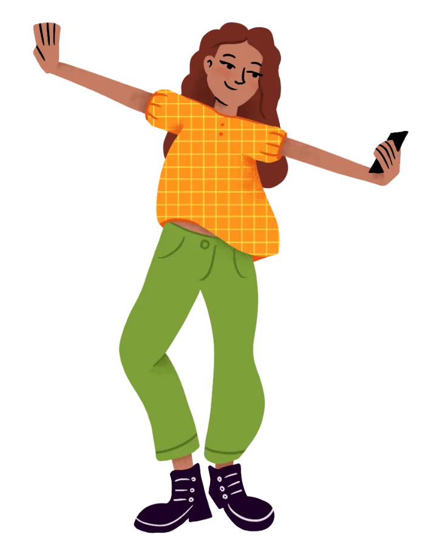
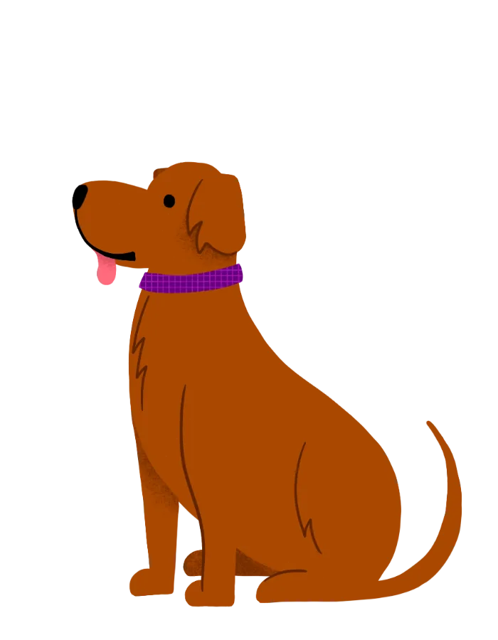
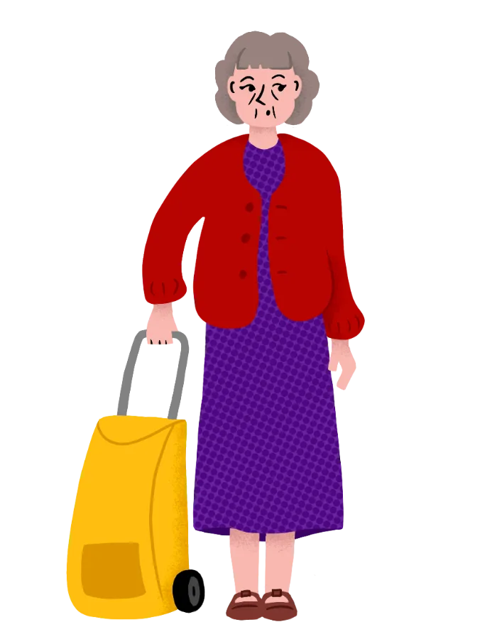
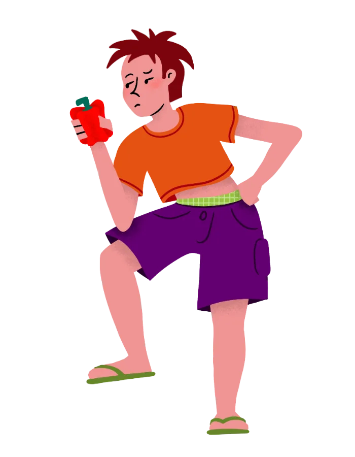
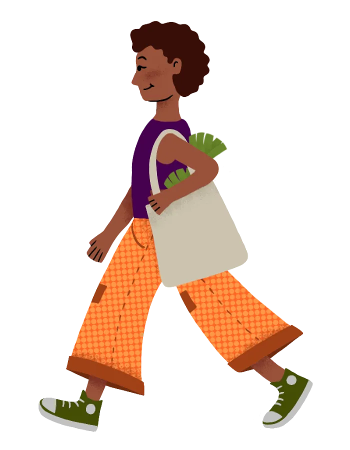
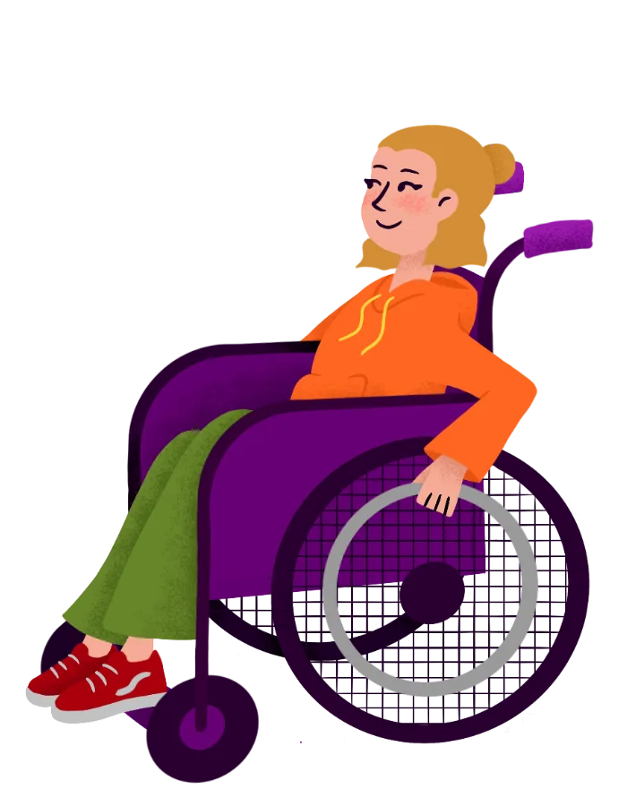

TU BARRIO, TU FERIA
Mi rol consistió en la ideación visual del sistema y producción del producto digital web, mis tareas fueron:
- Creación del sistema de diseño: Incluyendo paleta cromática, texturas, tipografía y el sistema de ilustraciones que acompañan al producto.
- Arquitectura de interfaz: Diseño del flujo de navegación y jerarquía de la información.
- Prototipado: Programación de la animación generativa en JavaScript y desarrollo del prototipo de alta fidelidad que simula la navegación del mapa y la aplicación de filtros.
Tecnologías utilizadas
 Figma
Figma
 Adobe Suite
Adobe Suite
 Procreate
Procreate
 ClaudeCode
ClaudeCode
 p5.js
p5.js
Contexto y problemática
Las ferias vecinales ocupan un lugar significativo en la vida de los barrios, funcionando como espacios de encuentro donde se cruzan intercambios económicos, interacciones sociales e identidades comunitarias.
Sin embargo, según el informe de la Cámara de Industrias del Uruguay e INEFOP (2020) se evidencia que la feria ha dejado de ocupar un lugar cotidiano en la rutina de las personas uruguayas, desplazada por otras formas de compra, siendo los jóvenes de 18 a 34 años el grupo que menos acude a la feria como primer punto de compra.
Actualmente, la ubicación, horarios y oferta de las ferias dependen exclusivamente de la memoria o del hallazgo fortuito en la calle. Esto genera incertidumbre frente a las plataformas de retail modernas, cuyas experiencias digitales son fluidas e inmediatas.
El proyecto nace con el objetivo de reactivar el consumo en territorio y atraer a poblaciones jóvenes mediante el desarrollo de una identidad digital que formalice el acceso a la información y brinde certeza a los usuarios antes de su visita.

Animación desarrollada en JavaScript para la pantalla de inicio de la web. Los patrones geométricos se inspiran en el apilamiento hexagonal de las frutas y verduras, trasmitiendo el concepto de flujo, intercambio y abundancia de las ferias barriales.

Propuesta estratégica
La feria es efímera por naturaleza, pero la necesidad de información del usuario es constante. Su presencia debe circular simbólicamente en el barrio, y permanecer en la memoria visual de quienes la habitan.
La estrategia combina presencia en redes sociales, cartelería y objetos de fidelización, todos nucleados por una plataforma web geolocalizada que actúa como punto de contacto. Formalizando el acceso a la información e instalando a las ferias como una experiencia de compra ordenada y accesible, se activa el deseo de consumo.
Públicos
El proyecto se dirige al grupo de jóvenes de 18 a 34 años, que se ocupan de la compra de alimentos.
En función de su relación con el contexto se detectan 3 perfiles.
Comportamiento: Posee una relación nula o escasa con el entorno físico de la feria y el barrio.
Necesidad: Superar la barrera del desconocimiento.
Oportunidad de Diseño: Generar interés mediante una identidad visual que presente la feria como un evento relevante, moderno y digno de ser explorado.
Comportamiento: Prioriza la rapidez y la accesibilidad sobre el vínculo emocional. Busca optimizar tiempo y exige inmediatez. Compara la feria con la conveniencia del supermercado.
Necesidad: Cambiar la percepción de que la feria es "difícil" o "lenta" comparada con un supermercado.
Oportunidad de diseño: Priorización del mapa geolocalizado para responder en menos de 2 clics: ¿Dónde hay feria hoy cerca de mí?
Comportamiento: Usuario con valores éticos y de consumo alineados con la soberanía alimentaria. Ya posee un vínculo con el territorio.
Necesidad: Profundizar la conexión y pertenencia.
Oportunidad de Diseño: Retención y comunidad a través de objetos de fidelización. El diseño debe ofrecer contenido de valor agregado (historia de las ferias, impacto social) que refuerce su compromiso.
Flujo de usuario
Al tratarse de una experiencia pensada para ser escaneada mediante códigos QR en la vía pública, la arquitectura se diseñó bajo un esquema sin scroll. Esto elimina la fatiga de navegación y orienta al usuario directamente a la acción.
A través de textos breves, se explica cómo consumir en ferias aporta a la economía solidaria, beneficiando tanto a la sociedad como al bolsillo.
Módulo principal con filtros combinados por día, cercanía y barrio. Al seleccionar una feria, se despliega su información específica, incluyendo ubicación precisa, horarios, categorías de puestos e información de los vendedores.

Las tramas geométricas conviven de manera integrada con ilustraciones manuales que operan como los botones de acción.
Sistema y lenguaje visual
El lenguaje gráfico equilibra la institucionalidad del Municipio B con una estética contemporánea adaptada para captar la atención de audiencias jóvenes en entornos digitales saturados.
A partir de una paleta que es llamativa y colorida, pero también orgánica y terrenal, se generan superposiciones de tramas geométricas, inspiradas en el apilamiento hexagonal de frutas y verduras.
Remiten al movimiento colectivo, reforzando la idea de un espacio barrial dinámico y en constante transformación.
Se desarrolló un estilo de ilustraciones que aporta una arista humana al sistema, equilibrando la construcción vectorial con la calidez del trazo manual. Estos recursos permiten representar escenas, gestos y dinámicas propias de la feria.
Estas además se integran directamente en la interfaz, operando como botones de acción que imitan la visualidad de un sticker.






Actualizar la experiencia de la feria no es solo optimizar una compra, es fortalecer la vida barrial.

.webp)
Tote bag que utiliza las ilustraciones del sistema visual.
Stickers que nacen de los botones de la web, referencian a cada feria vecinal del municipio B.
Próximas iteraciones
Aunque la propuesta visual se diseñó respondiendo a un público joven y con alta alfabetización digital, un servicio para un comitente estatal exige accesibilidad universal, como navegación por teclado y compatibilidad con lectores de pantalla, además de un modo de "alta legibilidad" que desactive las tramas de fondo para usuarios con sensibilidad visual.
El flujo actual resuelve la necesidad puntual de localización, pero no fomenta el retorno frecuente a la plataforma. Incorporando un calendario de frutas y verduras de estación con indicadores de precios y soberanía alimentaria, la herramienta evolucionaría de un mapa estático a un asistente de compra consciente.
Implementación de un flujo simple de puestos y ferias favoritas que permita personalizar la pantalla de inicio con los días y accesos directos del usuario, sin requerir un registro complejo que genere fricción.